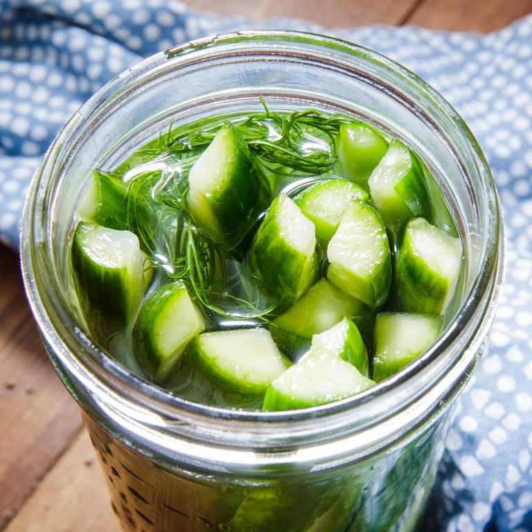
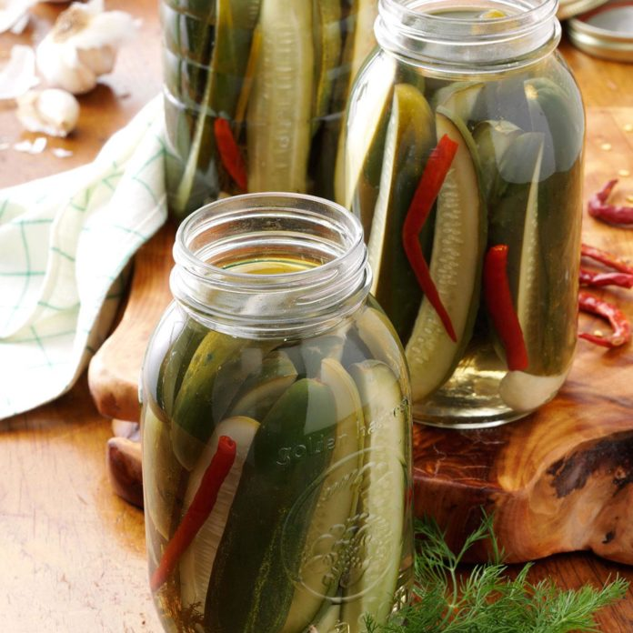
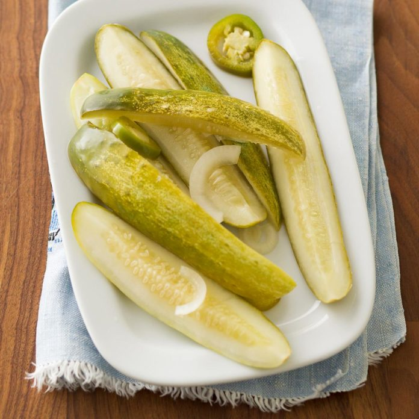
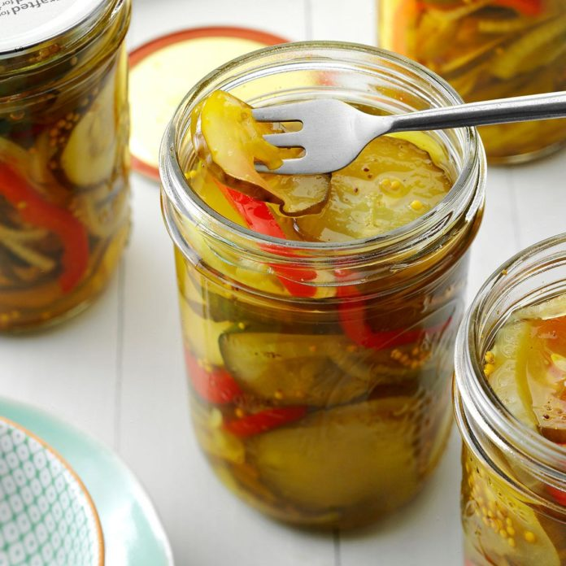
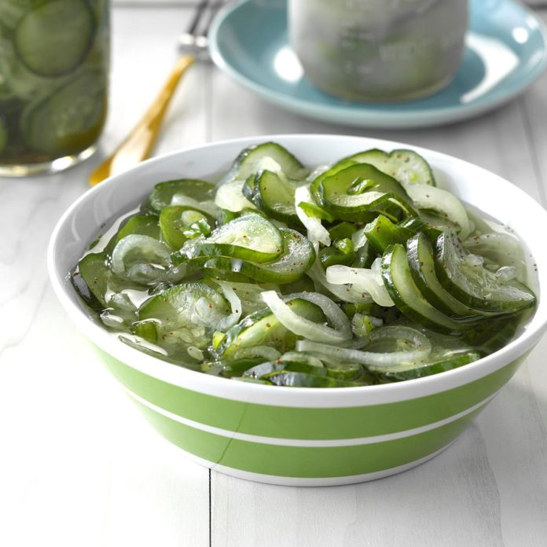
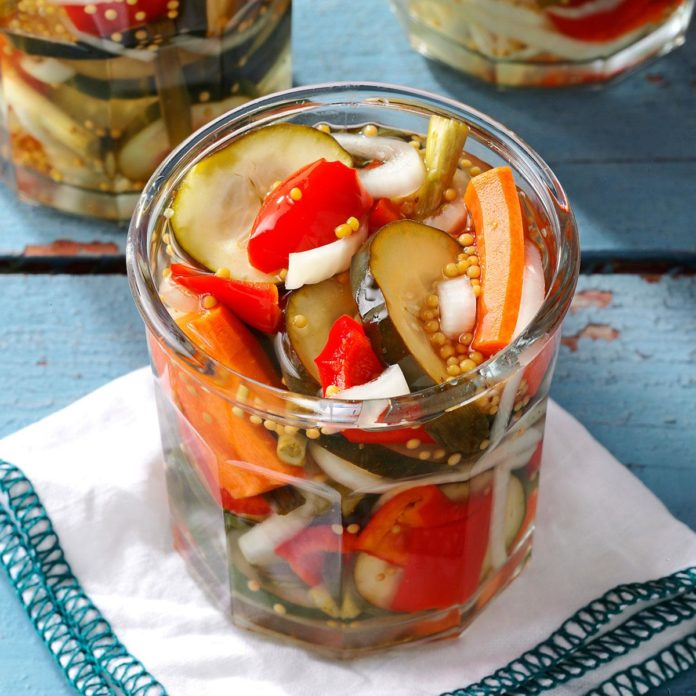

Make Your Own Pickles
You might not think much about it, but there are so many types of pickles! The great thing about making them at home
is that you can have them any way you like. Here are a few to get you started.
Just click on the pictures to go to each recipe. Enjoy!
Simple
Dill
Spicy Jalapeno Dill
Bread & Butter
Sweet & Tangy
Refrigerator Garden
